عنوان ارائه:
مقدمهای بر SASS

دانشجوی رشتهی مهندسی نرمافزار
درس مهندسی اینترنت
زمان: ۲۱ آبان
-
مقدمه
- Sass چیست؟
- چرا باید از Sass استفاده کنیم؟
- نصب Sass
-
بررسی قابلیتهای Sass
- متغیر
- تودرتو نویسی
- گروهبندی
- ارثبری
- عملگر
- import
- جمعبندی

Sass چیست؟
-
Syntactically Awesome Style Sheets (SASS)
زبان اسکریپتی
پیشپردازنده CSS
sass. یا scss.
۱
چرا از Sass استفاده کنیم؟
-
استفاده از اصول برنامهنویسی برای نوشتن کدهای CSS
توسعه سریع
عدم نیاز به نوشتن کد تکراری
مدیریت استایلها در برنامههای بزرگ
۲
نصب Sass
- استفاده از اپلیکیشن
- استفاده از کامندلاین
۳
قابلیتهای Sass
متغیرها
مقادیری که به میزان زیادی استفاده میشوند، میتواند بهعنوان متغیر تعریف شود..
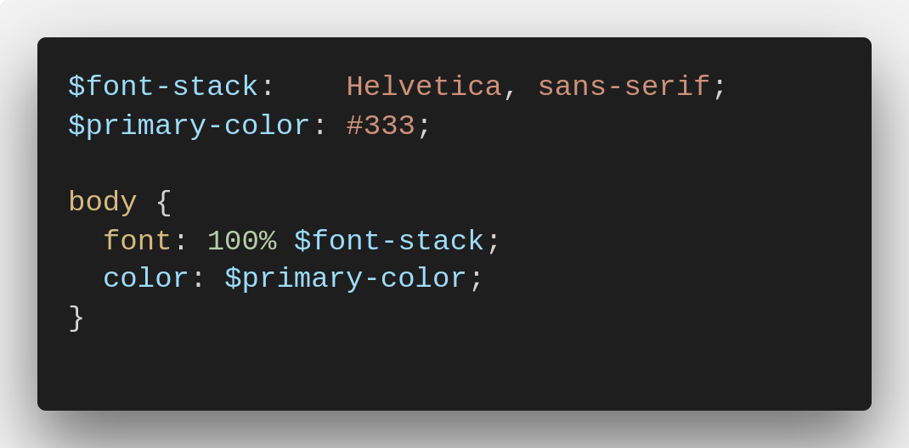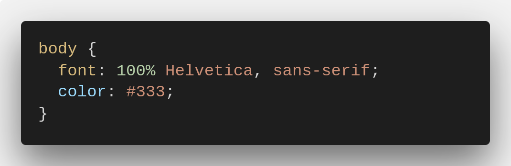
مزیت:
راحتتر شدن خطایابی
سریعتر شدن تغییرات
۴
قابلیتهای Sass
تودرتو نویسی
استفاده از ساختار سلسله مراتبی که در HTML وجود دارد.
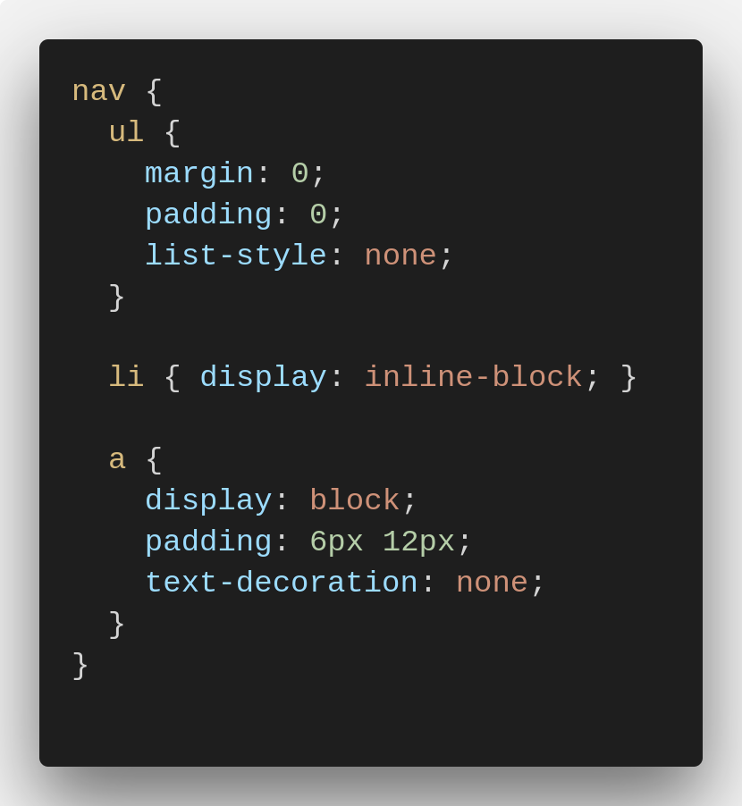 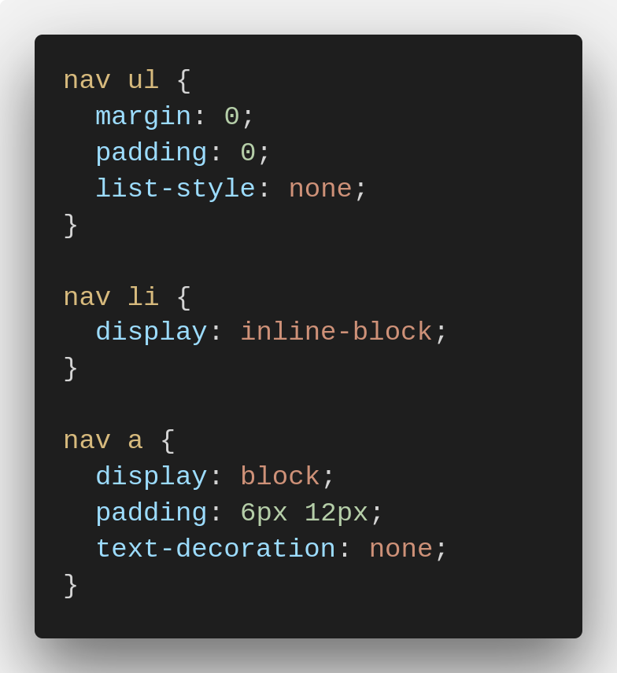۵
قابلیتهای Sass
گروهبندی
تعریف mixinها باعث میشود که گروهی از دستورات پرکاربرد را به راحتی در زمان مورد نیاز به کار ببرید. استفاده از متغیرها در کنار تعریف mixinها، کد را انعطافپذیرتر خواهد کرد.
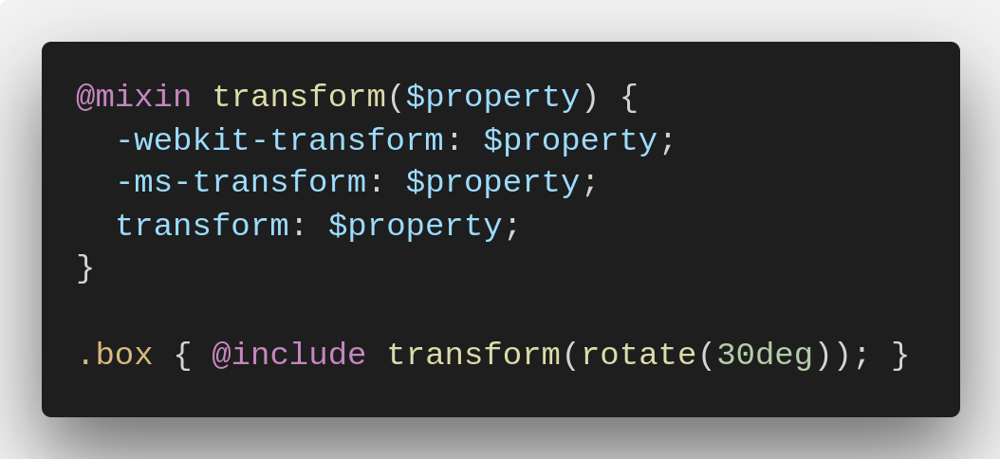 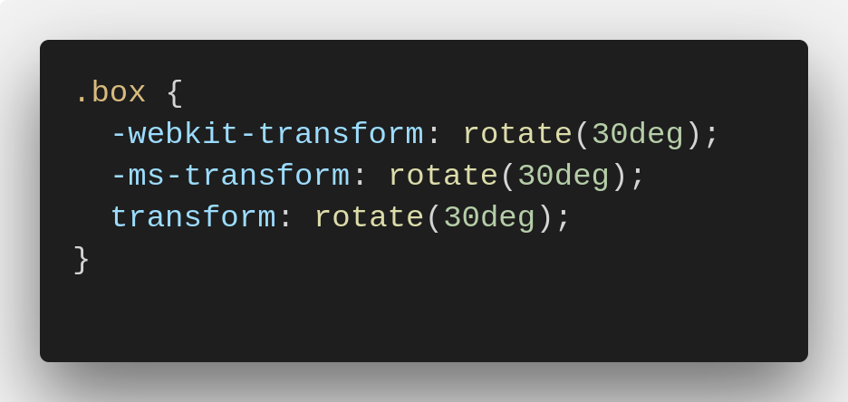۶
قابلیتهای Sass
ارثبری
با به کارگیری این ویژگی میتوان گروهی از خصوصیتهای یک selector را در selector دیگری به اشتراک گذاشت تا از ایجاد کلاس های مختلف و نوشتن کدهای تکراری جلوگیری شود.
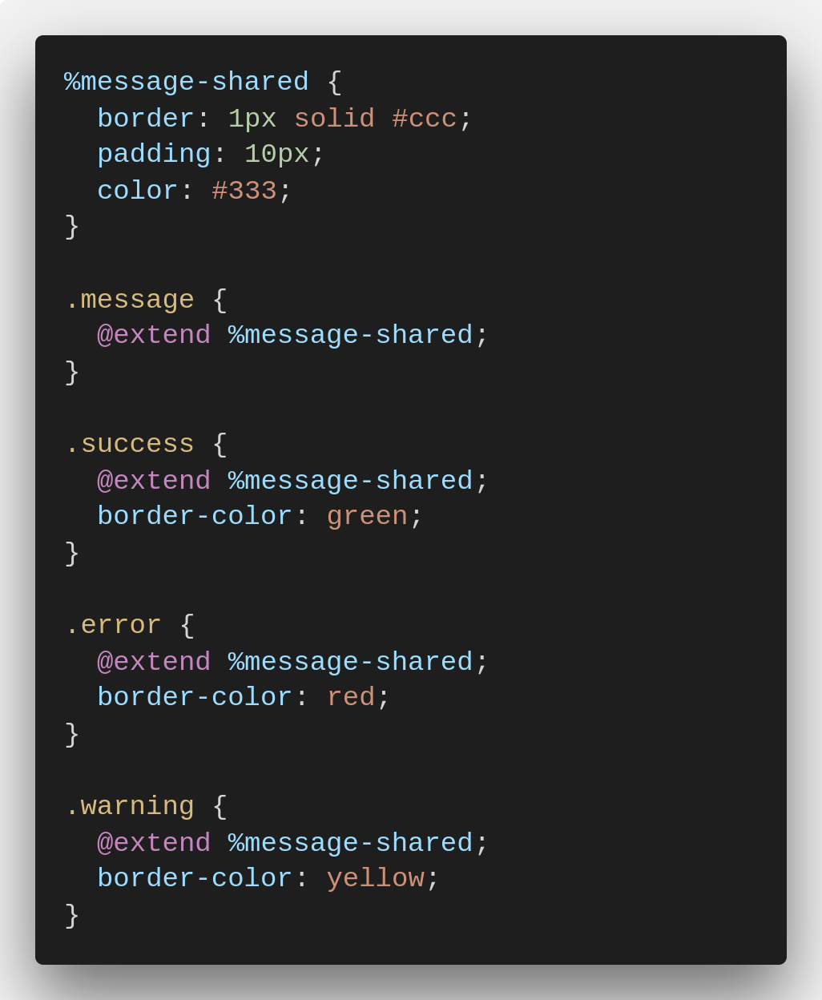 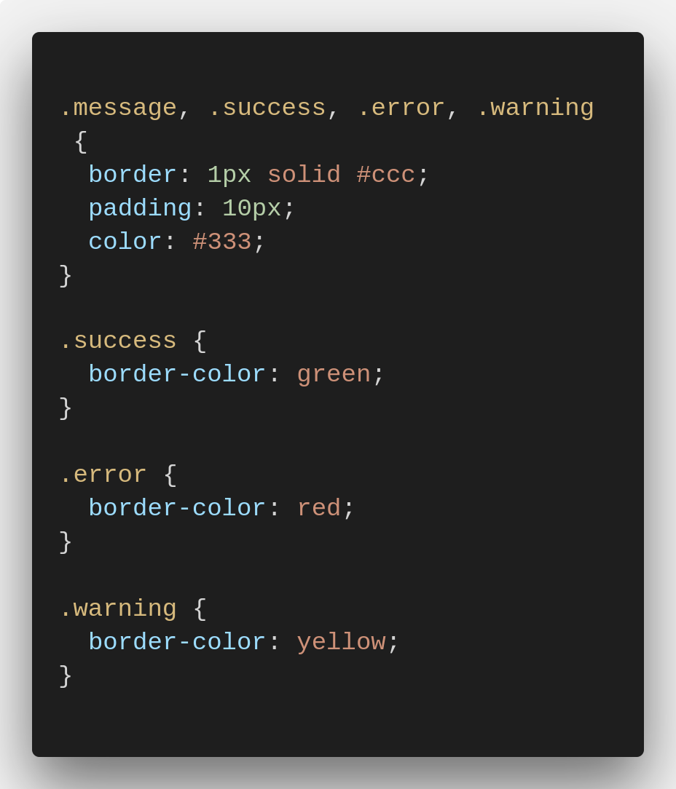۷
قابلیتهای Sass
عملگر
در Sass عملگرهای ریاضی + ، - ، * ، / و % قابل استفاده هستند؛ در نتیجه به کمک Sass محاسبات در Css امکانپذیر شده است.
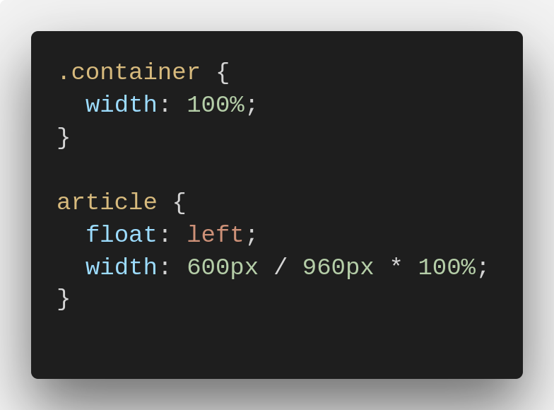 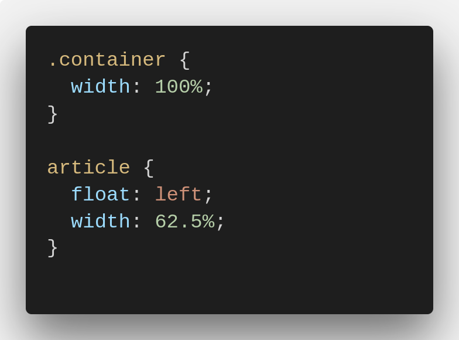
۸
قابلیتهای Sass
import
امکان پیادهسازی استایل صفحات، بصورت ماژولار را فراهم میکند.
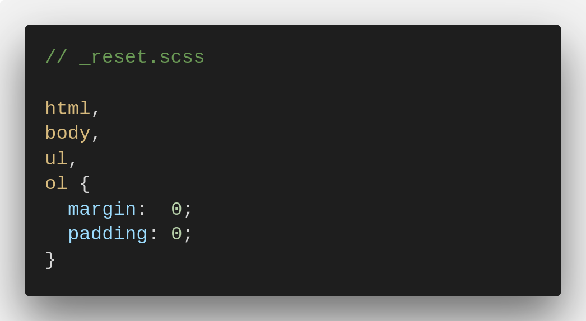 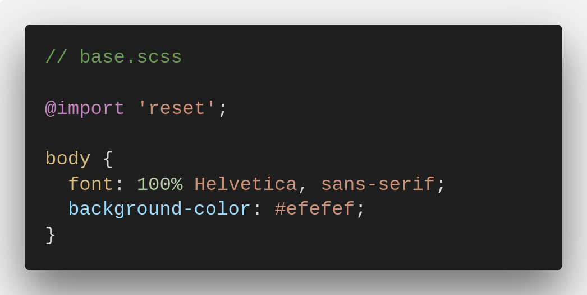
مزیت:
فقط یک درخواست HTTP
سرعت بالای لود شدن صفحه
تاثیر در سئو
۹
جمعبندی
۱۰
Any Question?